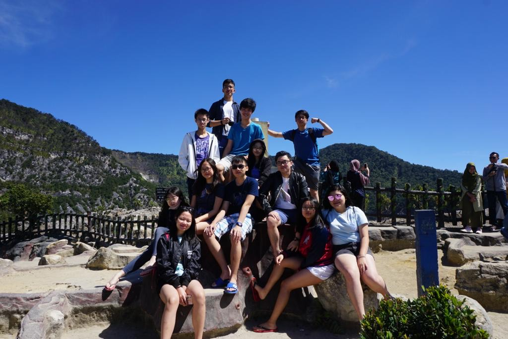

Hello there! My name is Ryan Nicholas Permana, otherwise known as h4ppyturt1e in many online communities I interact with!
I'm a 2nd year CSC student from the University of Victoria, and have always been interested in math, computers and programming.
I was born and raised in Jakarta, Indonesia.
(If you have never heard of Indonesia, think of Bali. There you go.)
I went to high school in Raffles Christian School in Kelapa Gading, in the northern part of Jakarta. If I could only say
three things to describe Jakarta, it would be: Hot, Crowded and Heavy Traffic. That's why when it was entering fall
I found it very difficult to adapt to the Canadian Weather™, despite being the warmest city in the country. On the
contrary, the low population density is incredible! I absolutely love it here in Victoria.
The pictures I have inserted throughout the website are those of my high school friend group, whom I still keep in contact
with to this day! Fortunately, two of them went to UBC, and another two went to the University of Washington, which are both
only a ferry away from Victoria! These people are those that I can be vulnerable with, and I am extremely grateful to have
met them. Hopefully as the decades pass by our friendship will still hold strong! Here's a video of our trip to Lembang, a
a mountainous area a couple hours by car from Jakarta. This was our farewell trip before we all went our separate ways.
By the way, if you click on the rooftop picture, you will find a gallery of images of me and my friends! ===========>
When I was very young around the age of 8, I visited Canada for the first time to visit my aunt living here. All I can say is that
I absolutely loved it here. The people, the weather, the food, and everything in between! Since then, I decided to work towards
a future in Canada, where I would work my way towards permanent residency and to eventually bring my parents to move in with me here
would be my absolute long-term goal.
I first played badminton in Grade 9 of high school, and since then loved the sport to death. All I could think of during the pandemic was when would be the next time I could play again. This wish was soon granted as right after I moved to Victoria, not only did I finally get to play again, I also found a badminton partner to play with!
In Grade 7, we were forced to buy a guitar for music class. I hated this initially, but couldn't
be more grateful today. Soon after this, my mom decided it would be good for me to learn classical
guitar, which I did for about 8 years before I switched over to Electric, where I focused more on
Jazz and Blues style music. TLDR, I f**cking love the guitar.
I was always interested in the idea of how computers worked, math and logic in general. However my first exposure to "programming" would surprisingly be in Minecraft, as there were logic gates that you could create to make extremely complicated machines. Some talented players could even create a working calculator within the game! Since then I started on Python, and the rest is history.
Is there really anything better than popping a bag of popcorn in the microwave, choosing a show on your
favorite streaming website and sitting on the couch, getting more and more immersed into a world of fantasy
and magic? Well for me there probably isn't. (except maybe writing a huge block of code without testing and
having it work without errors) If I could pick a favorite genre it would probably be fantasy anime!